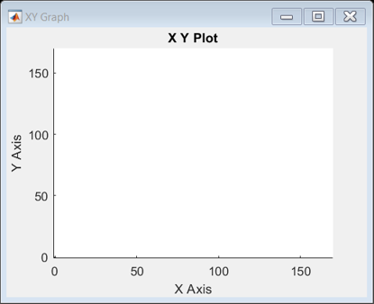
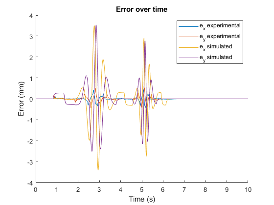
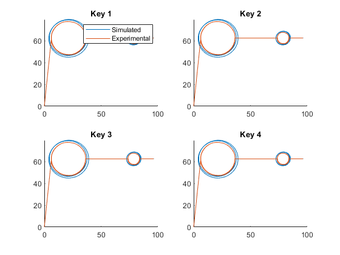

Contents
set up
name = 'lli.mat';
lli = load(name);
time = lli.lli.X.Data;
x_act = lli.lli.Y(1).Data;
y_act = lli.lli.Y(2).Data;
x_ref = lli.lli.Y(3).Data;
y_ref = lli.lli.Y(4).Data;
T = 0.0001;
Ka = 1;
Kt = 0.49;
Ke = 1.59;
Jx = 0.000436;
Bx = 0.0094;
Jy = 0.0003;
By = 0.0091;
a = 13.9282;
T_ = 0.0021323;
Kx = 0.75858;
Ky = 0.82224;
Ki = 12.5664;
LL = tf([a*T_ 1],[T_ 1]);
I = tf([1 Ki],[1 0]);
LLI_Lx_z = Kx*c2d(LL*I, T, 'tustin');
LLI_Ly_z = Ky*c2d(LL*I, T, 'tustin');
Tplot = time';
xplot = x_ref';
yplot = y_ref';
sim('g2_sim.slx');
t_sim = ans.sim.Data(:,1);
x_sim_ref = ans.sim.Data(:,2);
x_sim = ans.sim.Data(:,3);
y_sim_ref = ans.sim.Data(:,4);
y_sim = ans.sim.Data(:,5);

plot error
e_x_sim = x_sim_ref - x_sim;
e_y_sim = y_sim_ref - y_sim;
e_x_exp = x_ref - x_act;
e_y_esp = y_ref - y_act;
clf();
hold on;
plot(time, e_x_exp);
plot(time, e_y_esp);
plot(t_sim, e_x_sim);
plot(t_sim, e_y_sim);
legend('e_x experimental', 'e_y experimental', 'e_x simulated', 'e_y simulated');
title('Error over time');
xlabel('Time (s)');
ylabel('Error (mm)');
saveas(gcf, 'G2-1.png');

plot toolpath
x_exp = x_act;
y_exp = y_act;
figure;
clf();
subplot(2,2,1);
title('Key 1');
hold on;
plot(x_sim, y_sim);
plot(x_exp, y_exp);
legend('Simulated', 'Experimental');
subplot(2,2,2);
title('Key 2');
hold on;
plot(x_sim, y_sim);
plot(x_exp, y_exp);
subplot(2,2,3);
title('Key 3');
hold on;
plot(x_sim, y_sim);
plot(x_exp, y_exp);
subplot(2,2,4);
title('Key 4');
hold on;
plot(x_sim, y_sim);
plot(x_exp, y_exp);
